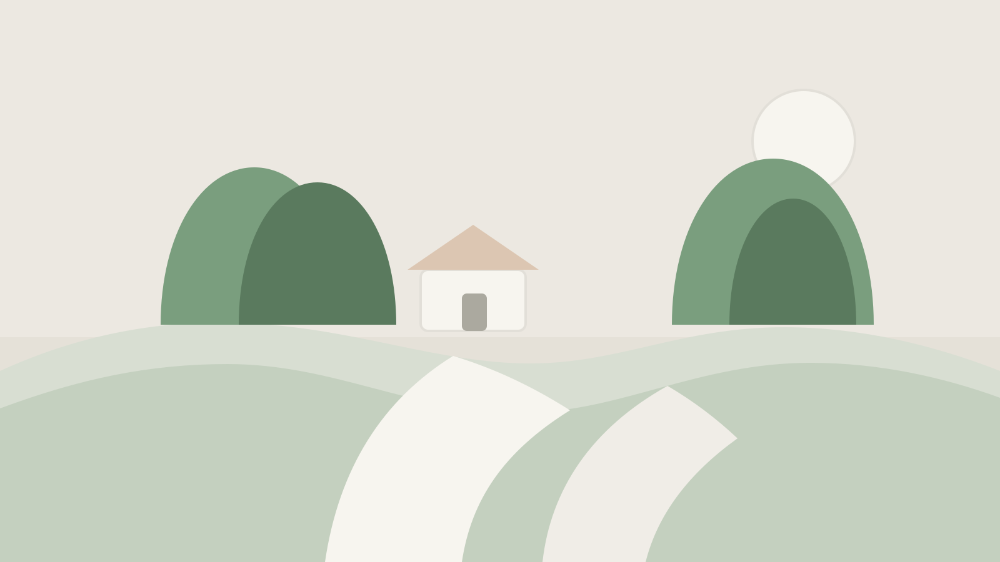

learning
What a Hackathon Weekend Taught Me About Quiet Systems
A few notes on building under pressure, choosing calmer defaults, and why the best tools often stay out of the way.
I'm Ying Xuan, and this site holds the parts of my life in computing that feel worth keeping close: school projects, competition milestones, volunteer work, and the quieter notes around them.
I care about building useful things with other people, learning steadily, and leaving enough room for life outside a screen to shape the work too.
read the latest →
A few notes on building under pressure, choosing calmer defaults, and why the best tools often stay out of the way.
I stopped treating every week like a sprint and started designing a routine I could actually keep.
Small scripts and scrappy utilities rarely look impressive, but they quietly save time and attention every single week.

A few soft notes from a trip that made me walk slower, look longer, and pay closer attention to ordinary details.
I remember the quiet side streets more than the landmarks: small coffee counters, bicycles left outside narrow homes, and the feeling that the whole city was moving just a little slower than I was used to.
read more →right now building out this site, keeping up with coding challenges, and making time for badminton and piano.
full /now →